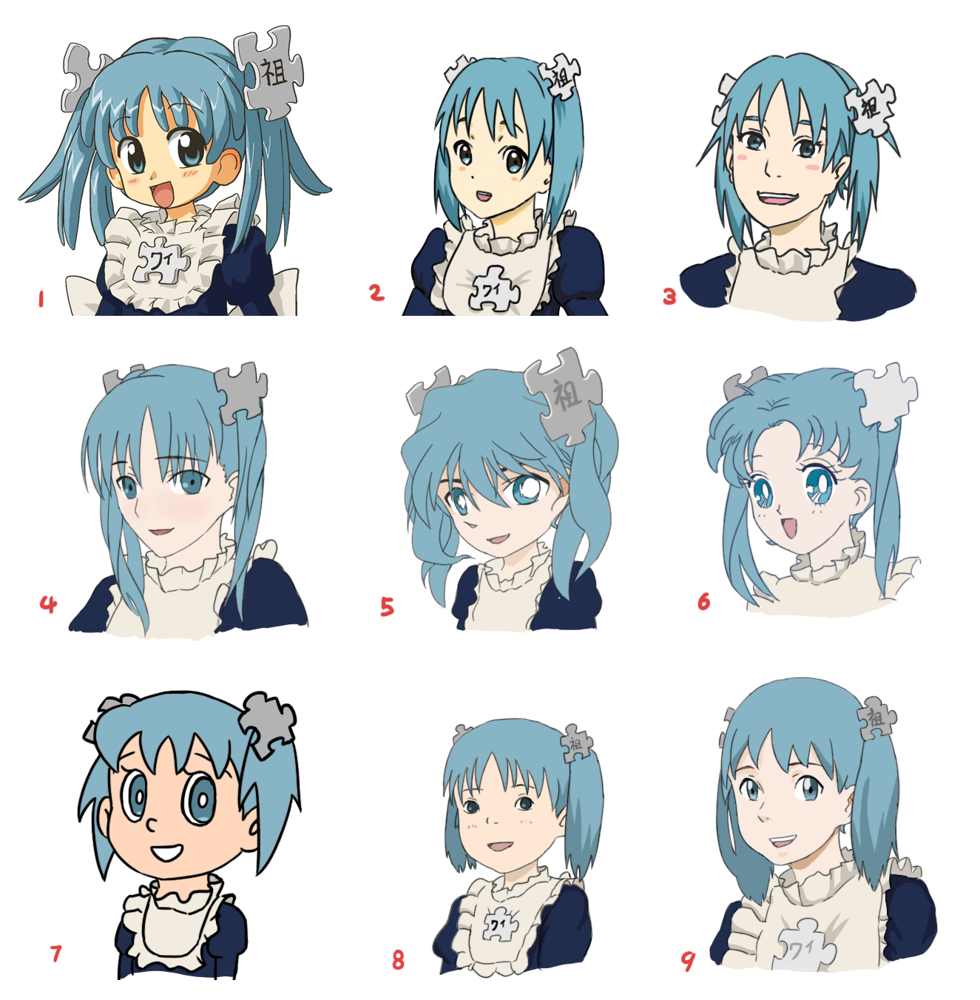

Anime (yap. アニメ, azərb. Animasiya, IPA. aꜜɲimeⓘ) — yapon animasiyası. Anime cizgi filmləri qərbin cizgi film texnikası ilə yapon ənənələrini birləşdirib eksperimentlər edən yapon rejissorlarının təcrübəsi nəticəsində yaranmışdır.[1] Başqa ölkələrin çəkdiyi animasiyalardan fərqli olaraq, anime bütün yaş qrupların üçün nəzərdə tutulur (hətta yaş və cins qruplara görə janrlara bölünür) və buna görə dünyada məşhurluq qazanmışdır. O cümlədən, personajların və fonların cizgisində də müxtəlif tərzi var. Anime üçün əsas süjet mənbələri: manqa (yapon komiksləri), ranobe (roman növü) və kompüter oyunları. Bəzən klassik ədəbiyyat kimi başqa mənbələr istifadə edilir. Bəzən isə anime süjetı orijinal ola bilər (onda isə, artıq bu süjetın əsasında animenın kitab və manqa versiyaları yaradıla bilər). «Anime» sözün mənası kontekstdən aslı olaraq dəyişilə bilər.
